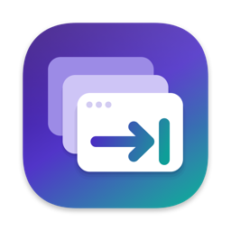

BetterAltTab is a free window switcher for macOS. Press ⌘ ⇥ to see every open window, not just every app, and jump straight to the one you want.
Free and open source · macOS 12 or later
Built on AltTab, the popular open-source switcher, with fewer settings and nothing held back.
See a live thumbnail of each window, including several windows of the same app, and pick the right one at a glance.
⌘ ⇥ opens it, ⌘ ⇧ ⇥ goes back, and releasing ⌘ switches. Arrow keys, search and mouse clicks work too.
No Pro version, no trial and no license key. Everything is free.
No crash reports, no analytics, no feedback forms and no update checks. It never connects to a server.
Shortcut, which windows to show, theme, delay and start at login. Sensible defaults for everything else.
It never plays the macOS alert sound, however fast you type.
BetterAltTab is built from source, which takes a few minutes. You need a Mac with Xcode installed.
git clone https://github.com/stanimir93/BetterAltTab.git cd BetterAltTab
A stable signature lets macOS remember the app's permissions when you rebuild it.
scripts/codesign/setup_local.sh
Create config/local.xcconfig with:
CODE_SIGN_IDENTITY = Local Self-Signed OTHER_CODE_SIGN_FLAGS = --timestamp=none --deep --options runtime
xcodebuild -project alt-tab-macos.xcodeproj -scheme Release -derivedDataPath DerivedData
ditto DerivedData/Build/Products/Release/BetterAltTab.app /Applications/BetterAltTab.app open /Applications/BetterAltTab.app